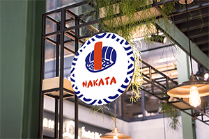

-

-

-

- 
-

Céation d’un packaging alimentaire pour le restaurant Japonais Nakata, présent à Lyon 6ème.
Ce projet a été créer pour répondre à une demande croissante de la marque, c’est à dire créer
une identité visuelle, et renforcer leur stratégie marketing. Ils ont alors fait appel à mes services.
Après la réalisation d’un logo, j’ai pu réaliser plusieurs supports de communication sur les logiciels
de PAO Indisign, Photoshop et Illustrator. Cette nouvelle identité visuelle sobre et élégante s’inscrit
dans leur démarche d’amélioration et de changement de positionnement, allant vers le haut de gamme, premium.
En free-lance depuis 1 an, contactez-moi pour tous vos projets de communication et création visuelle.
Cette bouteille sera utilisée comme carafe pour leur restaurant. Face à la demande croissante des clients, les propriétaires n’ont rien voulu négliger. Le design utilisé pour cette bouteille rappelle le sushi, produit phare du restaurant. Leur stratégie marketing et nouvelle identité visuelle devait alors naturellement tourner autour de cet aliment noble. Le positionnement voulu par la marque évolue sans arrêt, pour se démarquer des concurrents, toujours plus présents dans le secteur d’activité de l’agro-alimentaire, spécialement concernant les restaurants dis « du monde ». L’image de la marque vis à travers les outils marketing créer, les goodies qui orneront le restaurant pour le décorer ou autre. L’alcool n’est pas servi dans ce restaurant, cette carafe sera seulement utilisée pour l’eau, disposée sur toutes les tables.
Création visuelle d’un des éléments les plus importants d’un restaurant…. Sa carte !
Elle s’inscrit toujours dans le cadre du développement de l’identité visuelle de la marque, le marketing et la
communication graphique sont présents dans tous les domaines !
La carte sera en format A5, sur papier recyclé. Cela renforcera son positionnement stratégique, et le nouveau
positionnement haut de gamme voulu par la marque.
Nous utilisons les couleurs définies dans la charte graphique, c’est-à-dire le bleu électrique et le rouge vif.
Ces couleurs ont été sélectionnées pour leur message fort, et leur aspect visuel réconfortant.
La communication doit être vecteur d’émotions, et la communication réunis depuis toujours les Hommes.
Nous avons utilisé des visuels larges et originaux, représentatifs des différentes pièces vendues dans le restaurant.
Le restaurant utilise très peu de produits, mais les produits sélectionnés sont de très grande qualité.
La dernière diapositive de ce travail de refonte d’identité visuelle concerne la devanture du magasin.
Porte d’entrée sur le magasin et son univers, l’enseigne a été très compliqué à réaliser.
Nous devions prendre en conséquence les différences météorologiques de la ville de Lyon, et
ses amples différences de température : très chaud l’été et très froid l’hiver.
Nous avions également dû déposer un dossier complet avec les descriptifs techniques
et opérationnels à la mairie du 6ème arrondissement pour avoir l’autorisation de poser un encart, une enseigne.
Toutes les enseignes de la rue concernée sont réalisés selon un cahier des charges commun.
Cela n’a heureusement eu aucun impact sur la création visuelle, nous étions libres de réaliser ce que nous voulions.